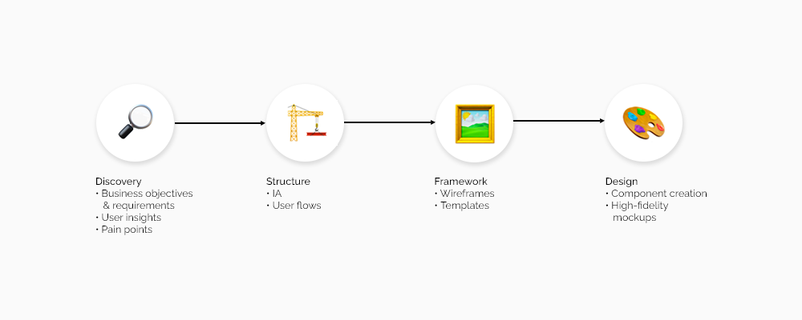
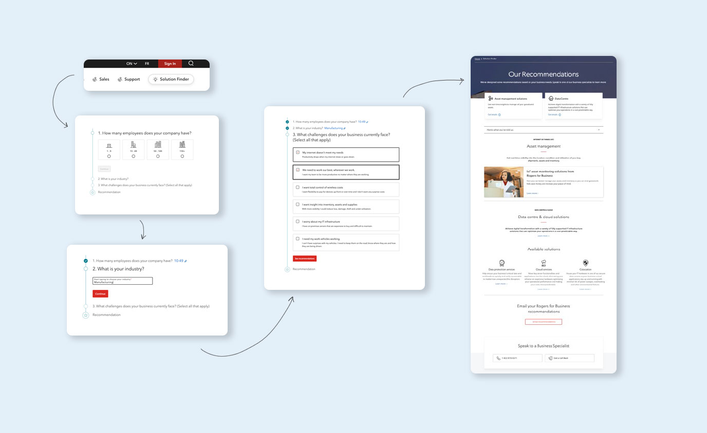

Rogers Communications
Project Timeline:
2020-2021
Tools:
Sketch, Abstract, Miro, Adobe Photoshop, Adobe Illustrator
Introduction
Rogers for Business (R4B) provides technological products and services that fit the needs for business customers in Canada, such as start-ups, scale-ups, and enterprise companies. Throughout this project, we embodied a “work slow, so we can work fast” mindset. We aimed to create a cohesive and holistic experience throughout the business site, whilst empowering newly onboarded designers to work efficiently and to promote innovation throughout the design team.
EXPLORING THE PROBLEM
Businesses struggle with acquiring new customers and keeping them engaged. Rogers is no stranger to this challenge. We acknowledge that there are many factors that contribute to this issue. However, the biggest part of the problem was the disconnect in users funneling into the sales channels after browsing through the website, which ultimately caused a lack in sales.
It’s challenging for businesses to find relevant information that suits their technological needs and the overwhelming information can be overlooked and ignored. These users need to easily understand and navigate through technical content and identify what services they need for their business in order to effectively make purchasing decisions.
How might we help business users find the necessary information they need to make purchasing decisions?
Project Goals:
Once we understood the problem, our design team aligned on project goals. We needed to figure out a way to transform the current experience away from an online informative repository and make it more user-friendly, approachable, and easily understandable.
GOAL 1:
Redesign the current experience into one where our business customers can learn and purchase personalized product offerings and get personalized recommendations.
GOAL 2:
Elevate the R4B brand with a more sophisticated look and experience while keeping true to the Rogers Brand.
GOAL 3:
Leverage data metrics to inform our designs, including website traffic, CTR, and conversion rates.
Design Process
Our design process is structured from a discovery to an exterior phase. (See diagram above)
Discovery and scope
User interviews and analysis
Given previous knowledge and preliminary research, the target user and defined personas as: Enterprise and business customers looking for wireless products and services for their business’ needs.
Through various user interviews, I was able to organize the data and pain points into affinity maps in order to try to find trends and themes. Eventually, I was able to form 4 main themes.
Themes + Insights
Too much information displayed meant for an overwhelming and complex user experience
Users are unsure about how to purchase products
There is a lack of trust with sites that look outdated
Users are unaware of what products they need for their business needs
Competitior analysis
In all projects that I participate in, I like conducting competitor analysis to understand what competitors are doing in order to help identify challenges users face and best practices. For this redesign, I have narrowed it down to a few telecommunication companies, not only in North America, but also in Europe and Australia. With these competitors, I have found that they are mainly operating with a very informative approach with ambiguous call to actions.
Discovering business requirements
Rogers, being a large organization, has many stakeholders and product owners that are involved in this project. Therefore, various efforts are needed to fully understand business requirements, KPI’s, and constraints. Throughout this step, I used these strategies to gain a holistic understanding about what is required:
- Facilitate discovery sessions with stakeholders and product owners
- Conducted design thinking workshops to spark new ideas and achieve alignment with all stakeholders
- Collaborate with other designers in whiteboard sessions.
- Thoroughly review pain points and issues from the previous site version.
Structure and Framework
Consistent templates
Throughout this initiative, pushing the goal of “working slow so we can work fast” is important. By creating page templates for designers, this allows them to work independently and faster in the future while being sure that their work is always in line with the overall visual guidelines and design pattern. Templates ultimately promoted consistency and empowered designers with efficient and accurate designs.
These page templates set the foundation for how our redesigned pages will be structured in order to ensure a cohesive and seamless experience. With this, I was able to structure templates to have a clear informative flow and call to action that ultimately connect to various sales funnels.
Design
Solution builder
It was discovered that 90% of users are willing to answer a few multiple-choice questions to receive recommended solutions. Relating back to our main theme and insight, creating this “Solution Builder '' tool helped hit the point of assisting users in figuring out what products they need for their business by producing personalized and relevant recommendations to the user. Given a short questionnaire, we were able to give recommendations of what products users would need based on their inputs. Questions vary from asking users about their business size, industry, and challenges they face with their business, from a technology standpoint.
Redesign work
The entire redesign of the R4B website was definitely a challenge that required a lot of effort! Throughout the journey of redesigning each product page, I followed the mentioned design process, from discovery to hi-fi mockups. This yielded to 10+ redesigned product pages.
Design system
A large part of this project was designing a new and improved design system. In relation to the project goals, reinventing the design system and creating new approachable and informative components help users understand the platform better, thus, decreasing that overwhelming feeling. In addition to design system creation, I was able to create detailed technological guidelines to avoid component overlap and to streamline development for our front-end developers.
Conclusion

To see more of the redesign project, please go to rogers.com/business.
Outcomes / results
After receiving tracked traffic, CTR, conversion rate, and bounce rates, I found that these metrics significantly increase from May-Nov 2019 vs May-Nov 2021.
645% increase in internet conversion rate
440% increase in new product plan page traffic
~200% increase in page traffic
Retrospect - what did I learn?
End-to-end process of developing a design system
Collaborating with business stakeholders, developers, and fellow designers
Conducting design thinking workshops
Organization and audits of components
Retrospect - what I could do better next time?
Given time constraints, not a lot of time was allocated to analyze the metrics and make further modifications post-production. For future improvements, I’m looking to observe and improve on sections that were deprioritized and achieved a lower scoring data metric in order to enhance the current experience.